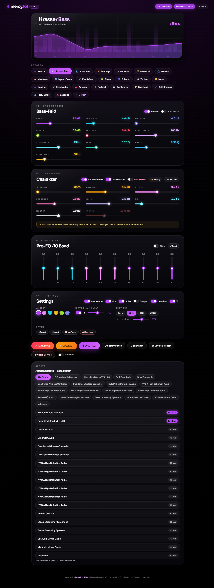
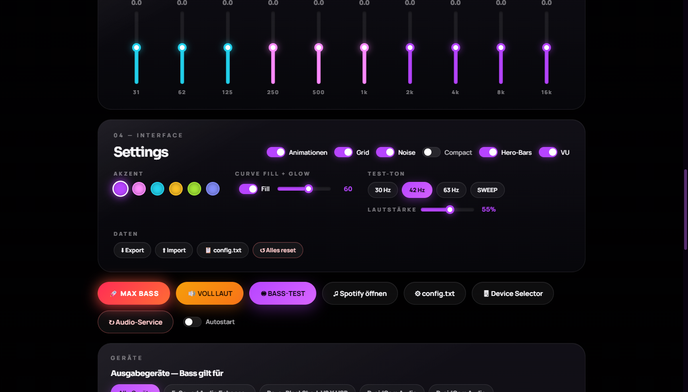

Mehr Bass.
Viel mehr Bass.
Systemweiter Bass-Boost für Spotify, Discord, Browser — alles was Windows spielt. Bis 5000% Boost, Overdrive, Air & Presence, 24 Presets und ein Galaxy-Dark-UI, die die Wand vibrieren lassen.
Ein Klick auf den Download → fertig. Equalizer APO wird automatisch mitinstalliert.

01So geht's
Herunterladen
MercyBass.exe laden und doppelklicken. UAC-Ja nicht vergessen — der Bass will Admin-Rechte.
EQ installieren
Das Tool installiert Equalizer APO automatisch und hakt dein Ausgabegerät an. Einfach Assistent durchklicken.
Bass drauf
Preset wählen oder selbst drehen — 🚀 MAX BASS oder 🔊 VOLL LAUT, Spotify auf, fertig.
02Features
Boost bis 5000%
Digitaler Gain direkt in der Audio-Kette: +34 dB obendrauf, wenn 100% nicht mehr reichen.
Overdrive
Lässt den Headroom absichtlich liegen — saturierter, aggressiver Sound. Für alle die's laut wollen.
Resonanz, Q & Air
Peak auf deiner Bass-Frequenz, Q-Regler, Sub-Punkt frei wählbar. Air & Presence für Spitze und Sprache.
10-Band-EQ
Pro-EQ von 31 Hz bis 16 kHz — Mitten weg, Höhen rein, was auch immer dein Setup braucht.
24 Presets
Phonk, Techno, Metal, Gaming, Party-Smile, Bodenlos, Maximum… oder eigene merken und wieder importieren.
Systemweit
Wirkt auf allem was Windows spielt — Spotify, Discord, Browser, Spiele. Kein Plugin nötig.
03Sieht gut aus, klingt besser

04FAQ
Ist das sicher?
Ja. Das Tool ist ein lokales Windows-Programm (kein Cloud-Kram), schreibt nur deine Equalizer-APO-Config und bedient sich der Windows-Lautstärke-API. Equalizer APO ist der bewährte Open-Source-Standard für systemweiten EQ.
Brauche ich noch etwas installiert?
Nur Windows 10/11. Equalizer APO (kostenlos, Open Source) wird vom Tool automatisch heruntergeladen und installiert — du klickst nur den Assistenten durch und hakst dein Ausgabegerät an.
Warum braucht es Admin-Rechte?
Die Config von Equalizer APO liegt in C:\Program Files und die Installation hängt im
Windows-Audio-Stack — beides braucht erhöhte Rechte. Beim Start fragt Windows einmal per UAC nach.
Kaputtelt das meinen Sound / mein Ohr?
Bei 5000% + Overdrive clippt das Signal hart — das ist gewollt (laut & saturiert). Für sauberen Bass: Boost 100–300%, Overdrive aus, Auto-Headroom an. Der Preamp zieht automatisch zurück, damit nichts raucht.
Geht das auch mit FxSound / Dolby / anderen Enhancern?
Ja, aber zwei Enhancer gleichzeitig können sich in die Quere kommen. Wenn's verzerrt: FxSound-EQ aus oder das Tool nur auf ein Gerät legen (Device-Pill in der UI).
Kostet das was?
Nix. Kein Account, keine Telemetrie, kein Abo. Download, Bass, fertig.
Bereit für Bodenlos?
Ein Download. Ein Klick. Deine Nachbarn kennen dich nicht mehr.
⬇ MercyBass.exe herunterladen8,5 MB · Windows 10/11 · kostenlos